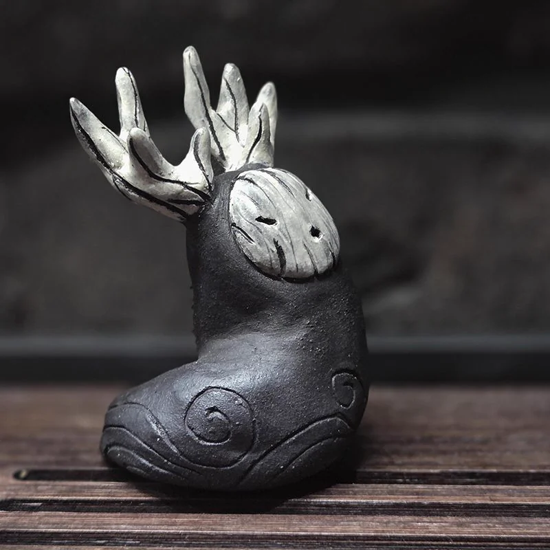
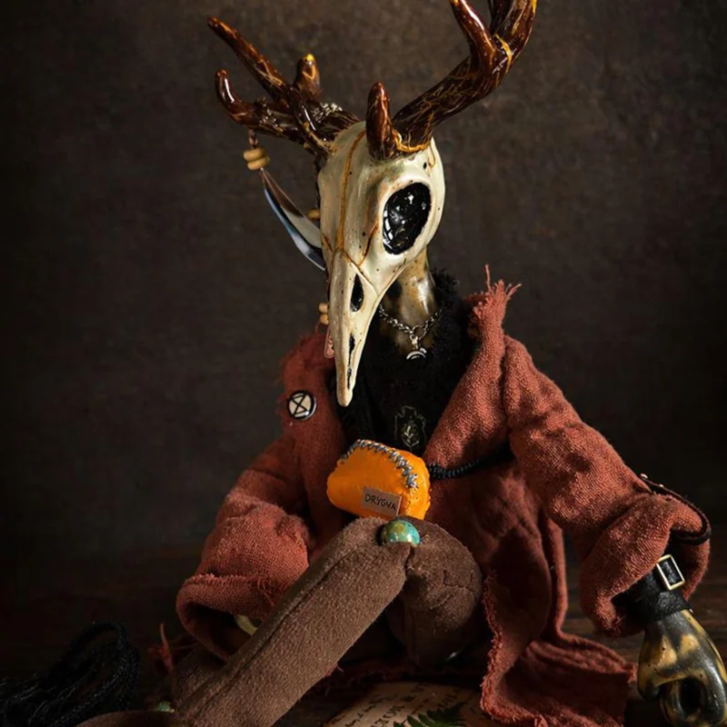
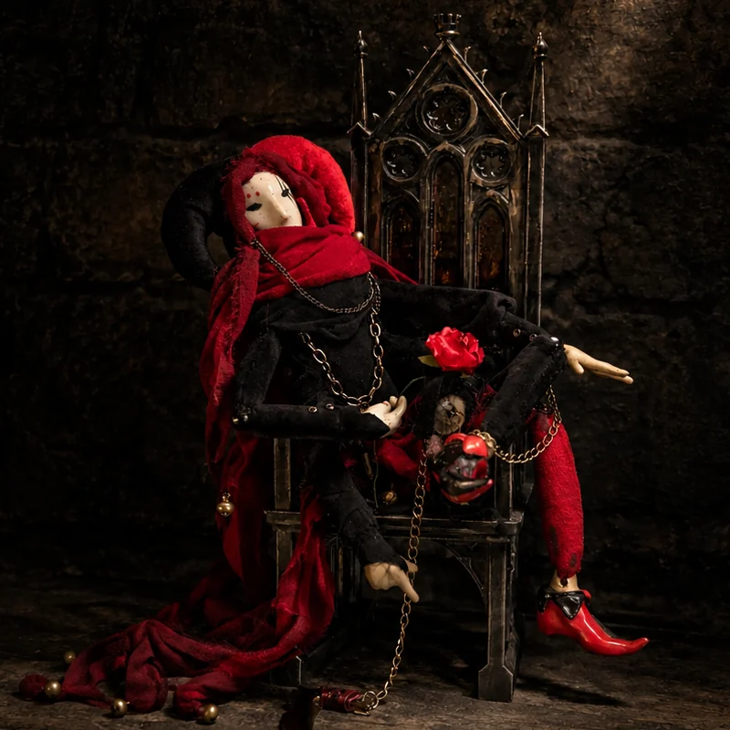
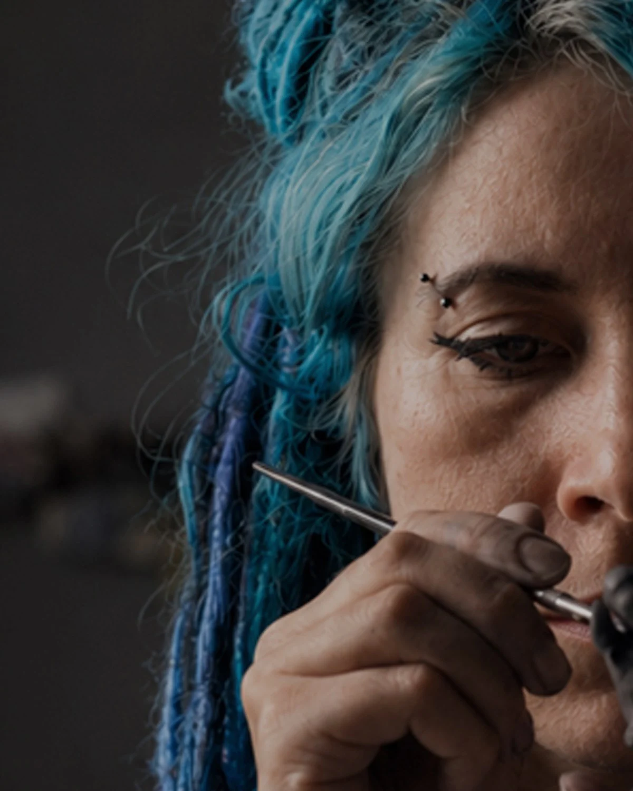
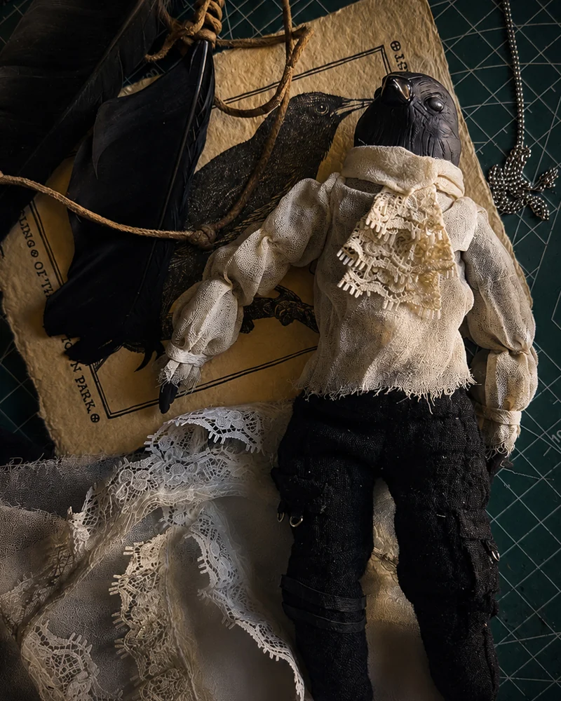
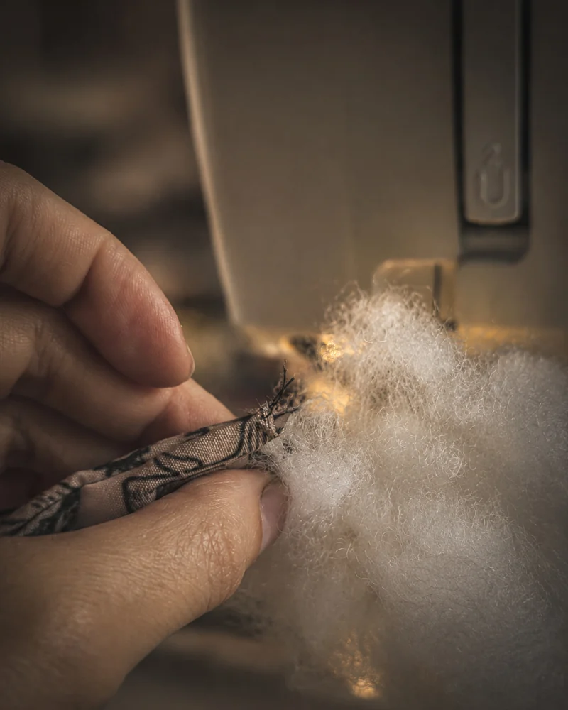
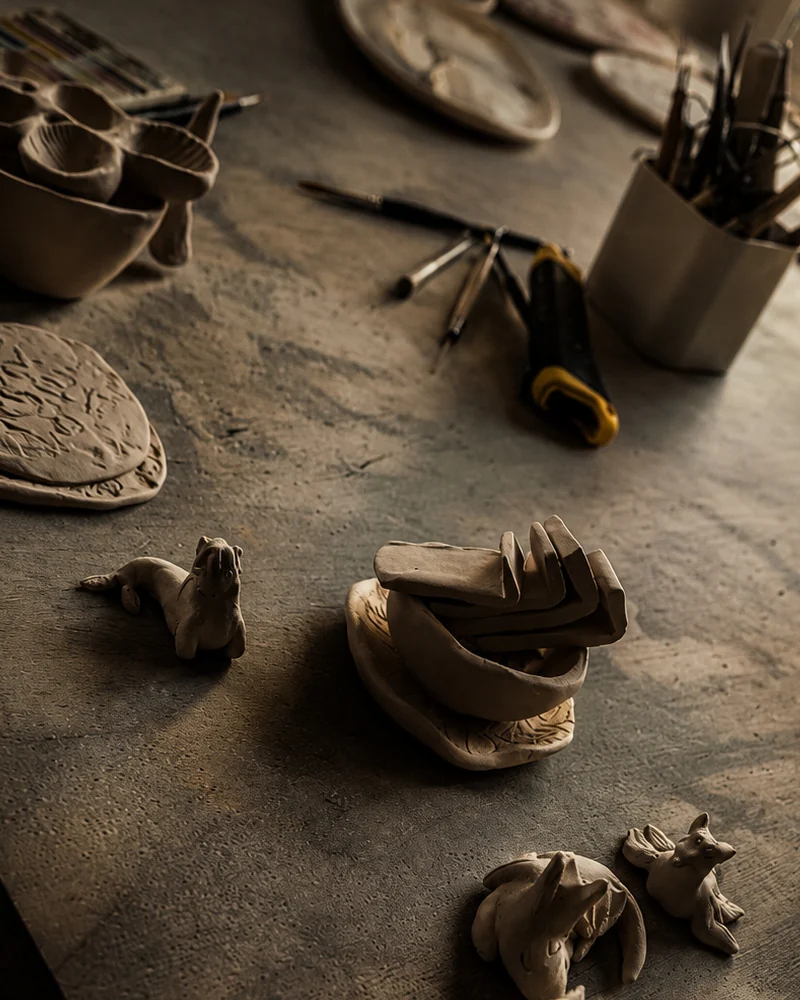
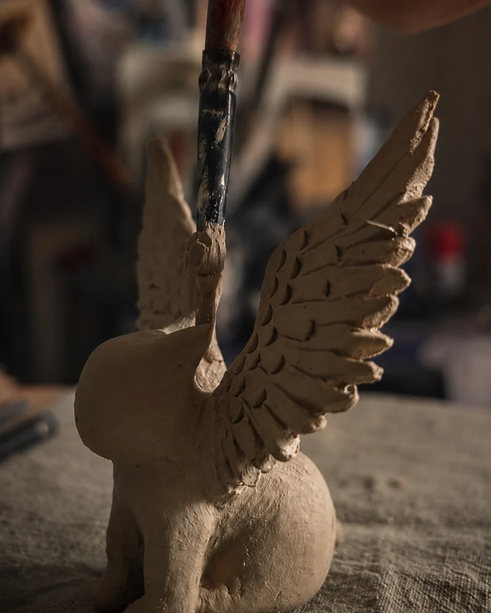

Chapter I · Fire-born companions
Tea Spirits
Handmade ceramic tea pets are tiny clay companions for your tea tray. Pour tea over yours to warm its soul, then find the one that speaks to you, or gather a set for any vibe.
Meet them ↓Handmade tea companions & art dolls
Collectible characters with tangible stories. Handcrafted with zero molds or copies.
No two are alike. Somewhere here is the one whose spirit mirrors yours.



Handmade ceramic tea pets are tiny clay companions for your tea tray. Pour tea over yours to warm its soul, then find the one that speaks to you, or gather a set for any vibe.
Meet them ↓Pour tea over them and the clay matures over time.

Poseable, hand-sculpted guys with unique stories. Mixed-media art dolls, each one truly one of a kind, and a loyal partner in crime for your world.
Enter the worlds ↓No molds, no copies. Three distinct series, each with its own world.
Dark-fantasy OOAK art dolls. Creatures born from decadent fantasy, inhabitants of forgotten realms.
Urban-folklore art dolls. Contemporary buddies shaped by modern cities. Slightly broken, slightly surreal.
Pocket-sized art dolls. Small, portable beings: minimal in form, maximal in personality.

Let's be honest, everyone needs a friend. Someone who shares your energy and stands by you on your own wavelength. I cannot find people for you, but I create strange, magical companions with very different characters. Every single one of them is looking for its human.
I sculpt these entities by hand using clay and mixed media. There are no molds and no copies here. My characters can be arrogant, cute, odd, or whimsical, but they are always real. They do not care about being normal.
If you appreciate beauty with a sharp edge and want a companion with a real soul, step inside.
Before they find their humans, these creatures are just raw clay, piles of linen, and a cup of freshly brewed tea on my desk. Here is where the clay wakes up, and where the studio's daily chaos lives.




Words from those who have welcomed a strange companion into their home.
Absolutely gorgeous piece very well crafted and packed, amazing communication. Extra tea coin and little dragon extra are a very cute addition, thank you!
This is one of the most beautiful things I have ever gotten on Etsy and the packaging was also beautiful. Highly, highly recommend!
My tea pet was shipped super fast, it's my first and I couldn't have picked a better tea pet, Kovu is amazing! The packaging was super nice too!
No two are alike. You'll find silly ones, thinkers, absolute sleepyheads, and the bold and fierce. Somewhere among them is the one that shares your vibe.
This is only the beginning of the saga. The rest have gathered in my Etsy shop, waiting to meet their humans. Step inside to see who calls to you, and peek behind the scenes of my workshop on Instagram.
Rare letters, only when new creatures appear. No spam.
Everything you might wonder before a strange companion follows you home.
A tea pet is a tiny ceramic companion for your tea tray. During a gongfu session, you share a few drops of tea with it. Over time, the clay drinks in the flavors and develops a unique patina, slowly maturing alongside you. While traditional tea pets come from Yixing, mine are hand-sculpted original characters with their own distinct personalities.
It's a one-of-a-kind mixed-media sculpture built to keep you company, not a toy or a fashion doll. Each piece has a hand-sculpted face (usually an animal one) and a soft, poseable body. They are made to perch on your bookshelf, sit on your desk, and silently judge your screen time — a companion with character, not a plaything.
This website is a gallery to look around, but my Etsy shop is where the actual adoptions happen. That's where you'll find current listings and pricing. If a character you like is already gone, don't worry — new ones wander into the shop over time.
Everything ships from Poland. Within the EU, delivery usually takes about two weeks. Due to international customs and tariff headaches, I'm gradually narrowing my Etsy shipping focus to the EU. However, if your country isn't listed at checkout, just drop me a message — we might still figure something out.
Honestly? No. My characters only come alive when I follow my own weird creative sparks. On commission, I'd just be guessing what's inside your head, which usually ends in stress for both of us. That said, I love hearing your ideas! Feel free to share them — one might just inspire a future piece. No promises, though.
Absolutely. Every tea pet and art doll is sculpted strictly by hand. No molds, no replication, no duplicates. The tiny quirks and asymmetries aren't flaws; they are the literal fingerprints that make your companion unrepeatable.
Keep it on your tea tray and pour a bit of warm tea over it while you drink — that's the whole ritual. Never use soap. Just rinse it with plain warm water and let it air-dry. The more tea it "drinks," the faster it develops its own seasoned look and character.
Technically, they are sturdy, but they aren't built for survival in the wild. A curious cat or a teething toddler will definitely win a fight against an art doll or a ceramic tea pet. Keep them on higher shelves where they can safely observe the chaos.
Scientifically speaking? Probably not. Emotionally? Absolutely. They excel at sitting quietly, listening to your rants about work, and making your space feel like a tiny magical forest. It's not hoarding if it's art.